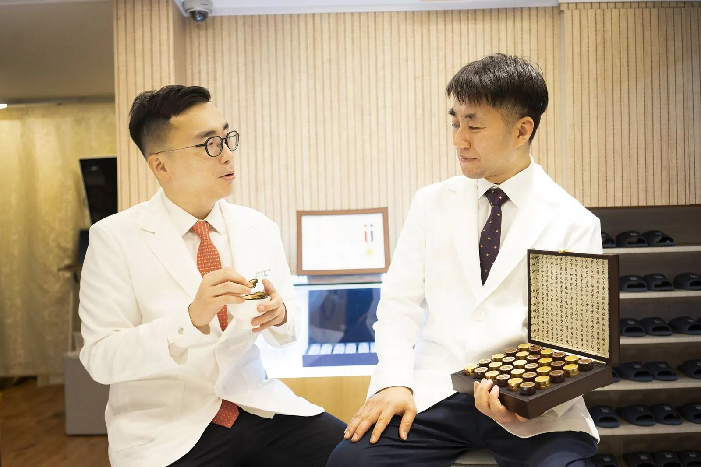

김장을 마친 뒤 며칠 동안 맵고 짠 겉절이, 기름진 수육, 날것인 생굴을 이어 먹으면 속쓰림과 묽은 변이 생기기 쉬워, 먹은 음식의 순서와 양, 가족이 함께 탈이 났는지부터 살핍니다.
여쭙는 것
- 속이 불편해진 것은 김장 날 당일인가요, 그다음 날인가요, 며칠 지나서인가요?
- 생굴이나 날것을 드셨다면 언제 드셨고, 증상은 그로부터 몇 시간 뒤에 시작되었나요?
- 같은 음식을 드신 가족 중에 비슷하게 탈이 난 분이 있나요?
생활에서 해 볼 것
- 첫날 아침에는 미지근한 물을 한 컵 천천히 드시고, 첫 끼는 흰죽이나 누룽지, 맑은…
- 겉절이와 생굴, 수육은 최소 이틀 쉬세요. 김치가 꼭 드시고 싶다면 고춧가루를 물에…
- 물은 한 번에 많이 들이켜기보다 한 시간에 한 컵 정도를 몇 번에 나누어 드세요.…
한의원에서 함께 살필 것
- 병원에서 감염성 장염은 아니라고 들었지만 김장철이나 명절 뒤마다 속쓰림과 묽은 변이…
- 장염이 가라앉은 뒤에도 입맛이 돌아오지 않고 배가 차고 더부룩한 경우
- 매운 음식이나 기름진 음식만 먹으면 배가 아프고 화장실을 자주 찾는 경우
먼저 확인이 필요한 신호
- 생굴이나 날것을 먹은 뒤 하루 이틀 사이에 시작된 심한 구토와 물 같은 설사
- 38도 이상의 열, 오한이 함께 있는 경우
- 변에 피가 섞이거나 검은 변을 보는 경우
김장을 마치고 며칠 동안 갓 버무린 겉절이와 수육, 생굴을 끼니마다 곁들이다 보면 속이 쓰리고 배가 부글거리며 변이 묽어지는 분이 많습니다. 대개는 맵고 짠 양념, 날마늘과 생강, 기름진 고기가 짧은 기간에 많이 들어가서 위와 장이 예민해진 경우라, 이틀 정도 순한 식사로 쉬어 주면서 물을 넉넉히 드시면 가라앉는 경우가 많습니다. 다만 생굴을 먹고 하루 이틀 사이에 구토와 물 같은 설사가 시작되었거나, 같은 음식을 먹은 가족이 비슷하게 탈이 났다면 음식으로 옮는 장염일 수 있어 먼저 병원 진료가 필요합니다. 피 섞인 변, 38도 이상의 열, 소변이 거의 나오지 않을 정도의 탈수가 함께 있다면 기다리지 마세요.
왜 김장 뒤에 속이 탈 나기 쉬운가요
- 갓 버무린 겉절이는 익은 김치보다 고춧가루, 날마늘, 생강, 젓갈의 맛이 강하게 살아 있어 위 점막에 주는 자극이 큰 편입니다.
- 김장 날은 간을 보느라 짠 양념을 여러 번 맛보고, 그 뒤 며칠도 짠 반찬이 상에 많이 오르면서 갈증이 늘고 물을 많이 마시게 되어 배가 출렁이고 더부룩해질 수 있습니다.
- 수육은 기름진 부위를 넉넉히 삶는 경우가 많아, 기름이 많은 음식이 이어지면 소화가 더디고 변이 묽어지는 분이 있습니다.
- 생굴은 겨울에 즐겨 먹지만 날것이라, 굴이 오염되어 있으면 겨울철에 흔한 바이러스성 장염의 원인이 될 수 있습니다. 대개 먹은 뒤 하루에서 이틀 사이에 구토와 설사가 시작됩니다.
- 김장은 대개 쪼그려 앉아 오랜 시간 일하고 찬 바닥과 찬물을 오래 접하는 날이라, 몸이 지친 상태에서 늦은 시간에 푸짐하게 먹게 되는 흐름이 겹칩니다.
- 막걸리나 소주를 곁들이는 경우가 많아 술의 자극까지 더해지기 쉽습니다.
- 한의학에서는 이런 상태를 비위가 차고 지친 데에 맵고 기름진 것이 몰려 습열이 생긴 흐름으로 보는 경우가 많아, 배의 온기, 혀의 상태, 변의 모양과 횟수를 함께 살핍니다.

먼저 이렇게 여쭙니다
- 속이 불편해진 것은 김장 날 당일인가요, 그다음 날인가요, 며칠 지나서인가요?
- 생굴이나 날것을 드셨다면 언제 드셨고, 증상은 그로부터 몇 시간 뒤에 시작되었나요?
- 같은 음식을 드신 가족 중에 비슷하게 탈이 난 분이 있나요?
- 변은 하루 몇 번이고, 모양은 무른 정도인가요, 물처럼 쏟아지는 정도인가요?
- 구토나 열, 오한이 함께 있었나요?
- 속쓰림은 명치 쪽인가요, 배꼽 주변의 쥐어짜는 통증인가요?
- 김장 뒤 며칠 동안 끼니마다 겉절이와 수육을 얼마나 드셨나요?
- 평소에도 매운 음식이나 기름진 음식을 먹으면 변이 묽어지는 편인가요?
- 복용 중인 약, 특히 혈압약이나 이뇨제, 당뇨약이 있나요? 설사가 이어지면 약 복용을 의사와 상의해야 하는 경우가 있습니다.
- 지난번 상담에서 이야기했던 배의 냉기나 식사 습관이 있었다면 그 뒤 어땠는지부터 이어서 여쭙니다.
일상에서 먼저 해 볼 수 있는 것
아래는 속쓰림과 무른 변이 시작된 날부터 사흘 정도를 기준으로 적었습니다. 구토와 물 같은 설사가 심하다면 이 순서보다 진료가 먼저입니다.
- 첫날 아침에는 미지근한 물을 한 컵 천천히 드시고, 첫 끼는 흰죽이나 누룽지, 맑은 무국처럼 양념이 거의 없는 음식으로 반 공기 정도만 드세요.
- 겉절이와 생굴, 수육은 최소 이틀 쉬세요. 김치가 꼭 드시고 싶다면 고춧가루를 물에 한 번 헹군 백김치나 동치미 건더기를 몇 조각 드시는 정도로 시작합니다.
- 물은 한 번에 많이 들이켜기보다 한 시간에 한 컵 정도를 몇 번에 나누어 드세요. 설사가 하루 세 번 이상이라면 약국에서 파는 경구 수분 보충액을 쓰는 것도 방법입니다.
- 점심과 저녁은 밥, 두부조림이나 달걀찜, 맑은 국, 익힌 애호박이나 무나물처럼 부드럽고 순한 반찬으로 차려 보세요. 기름에 볶거나 튀긴 반찬은 사흘째까지 줄입니다.
- 식사는 평소보다 조금 적게, 20분 이상 천천히 드시고 식후 바로 눕지 마세요.
- 배가 차고 부글거린다면 식후 30분쯤 배꼽 주변을 손바닥으로 따뜻하게 덮어 두거나 시계 방향으로 부드럽게 쓸어 주는 정도가 편할 수 있습니다. 열이 있거나 배가 심하게 아플 때는 찜질을 하지 마세요.
- 김장 김치를 나누어 담고 정리하는 일이 남았다면, 쪼그려 앉는 대신 식탁 높이에서 하고 30분마다 일어나 걸으며 손을 따뜻한 물에 녹여 주세요.
- 사흘째부터 변이 굳어지면 익은 김치를 조금씩 다시 곁들이고, 수육은 기름이 적은 부위를 몇 점부터 시작합니다. 생굴은 굴이 익혀서 드시는 편이 겨울철에는 마음이 놓입니다.
- 같은 음식을 먹은 가족이 함께 탈이 났다면 손을 비누로 30초 이상 씻고, 수건과 식기를 따로 쓰며, 아픈 사람은 가족의 음식을 만들지 않는 것이 좋습니다.

예를 들면 이런 경우입니다
아래는 실제 환자 이야기가 아니라 이해를 돕기 위해 만든 예시입니다.
- 예를 들어 주말에 가족이 모여 김장을 하고, 그날 저녁과 다음 날 세 끼를 모두 겉절이와 수육으로 드신 경우, 월요일 출근길부터 명치가 쓰리고 하루 두세 번 무른 변을 볼 수 있습니다. 열이나 구토가 없다면 이틀 정도 순한 식사와 물로 쉬어 주며 지켜볼 수 있습니다.
- 예를 들어 김장 날 저녁에 생굴을 듬뿍 곁들여 드시고, 다음 날 밤부터 갑자기 여러 번 토하고 물 같은 설사가 이어지며, 함께 드신 다른 가족도 비슷한 증상을 보이는 경우는 음식으로 옮는 장염을 먼저 생각해야 합니다. 이때는 생활 관리보다 병원 진료와 수분 보충이 먼저입니다.
- 예를 들어 어르신이 김장을 거들고 며칠 짠 반찬을 이어 드신 뒤 묽은 변이 계속되면서 입이 마르고 어지럽다고 하시는 경우, 탈수와 혈압 변화를 먼저 살펴야 합니다. 혈압약이나 이뇨제를 드시는 분은 처방한 의사에게 바로 상의하시는 편이 좋습니다.
- 예를 들어 평소 매운 음식만 먹으면 배가 아프고 화장실에 자주 가던 분이 김장철에 특히 심해지는 경우, 이번 일만이 아니라 장이 예민한 흐름이 바탕에 있을 수 있어 평소 식사와 긴장, 잠까지 함께 살펴볼 수 있습니다.
자주 하는 오해
- 김장 김치는 발효 음식이니 많이 먹을수록 장에 좋다고 생각하시는 분이 많습니다. 갓 버무린 겉절이는 아직 발효가 거의 되지 않은 상태라 양념 자극이 크고, 많이 드시면 오히려 속이 불편해질 수 있습니다.
- 설사가 나면 장을 비워야 한다며 물도 적게 드시는 분이 있습니다. 설사로 빠져나가는 물과 염분을 채워 주는 것이 먼저입니다.
- 지사제를 먼저 드시는 경우도 있는데, 열이 나거나 피가 섞인 변이 있을 때는 병원에서 확인한 뒤 쓰는 것이 안전합니다.
- 굴은 레몬이나 초장을 곁들이면 괜찮다고 여기기 쉽지만, 양념으로 굴 속의 바이러스가 없어지지는 않습니다.
- 수육은 삶은 음식이니 기름이 다 빠졌다고 생각하기 쉽지만, 삼겹이나 목살 부위는 삶아도 기름이 꽤 남아 있습니다.

스스로 점검해 보세요
- 김장 뒤 사흘 넘게 끼니마다 겉절이를 곁들였다.
- 수육을 한 끼에 접시 하나 넘게 드신 날이 있었다.
- 김장 날 술을 곁들였고 늦게까지 드셨다.
- 평소에도 매운 음식을 먹은 다음 날 변이 무른 편이다.
- 갈증이 심해 물을 한꺼번에 많이 들이켰다.
- 생굴을 드신 뒤 하루 이틀 사이에 구토와 물 같은 설사가 시작되었다.
- 같은 음식을 드신 가족도 비슷하게 탈이 났다.
- 38도 이상의 열이 나거나 변에 피가 보인다.
- 소변이 반나절 넘게 거의 나오지 않거나 일어설 때 어지럽다.
앞의 다섯 가지는 식사를 쉬어 주며 지켜볼 만한 흐름이고, 뒤의 네 가지 중 하나라도 해당한다면 병원 진료를 먼저 받으세요.
한의원에서 함께 살필 수 있는 경우
- 병원에서 감염성 장염은 아니라고 들었지만 김장철이나 명절 뒤마다 속쓰림과 묽은 변이 반복되는 경우
- 장염이 가라앉은 뒤에도 입맛이 돌아오지 않고 배가 차고 더부룩한 경우
- 매운 음식이나 기름진 음식만 먹으면 배가 아프고 화장실을 자주 찾는 경우
- 김장 일로 몸이 지친 뒤 소화와 잠이 함께 흐트러진 경우
- 어르신이 큰일을 치른 뒤 식사량이 줄고 기운이 쉽게 돌아오지 않는 경우
좋은꿈참사랑한의원에서는 첫 방문 때 최근 며칠 동안 드신 음식과 양, 증상이 시작된 때, 변의 횟수와 모양, 가족 중 비슷한 증상이 있는지를 먼저 여쭙니다. 감염이 의심되거나 탈수가 보이면 병원 진료를 먼저 안내합니다. 그렇지 않다면 모든 분께 진맥을 하며 맥이 힘없이 가라앉아 있는지 빠르고 들떠 있는지, 몸 전체의 리듬이 어느 쪽으로 기울었는지를 살피고, 배를 손으로 눌러 보며 찬 곳과 단단한 곳, 혀의 색과 설태를 함께 봅니다. 이를 바탕으로 침이나 한약 상담 여부를 정하고, 귀가 전에는 앞으로 사흘 동안의 식사 순서를 함께 정리해 드립니다. 다음 방문에서는 그 사흘이 어땠는지부터 이어서 여쭙니다. 이종호 대표원장을 비롯해 조영기 원장, 정원영 원장이 같은 방식으로 진료합니다.

얼마나 지켜보고, 언제 상담하면 좋을까요
- 열과 구토 없이 속쓰림과 무른 변만 있다면 순한 식사로 이틀에서 사흘 정도 지켜볼 수 있습니다.
- 사흘이 지나도 하루 세 번 이상 무른 변이 이어지거나, 일주일이 지나도 입맛과 속이 돌아오지 않는다면 진료를 받아 보세요.
- 어린아이와 어르신, 당뇨나 콩팥 질환이 있는 분은 설사가 하루만 심하게 이어져도 탈수가 빨리 올 수 있어 일찍 진료받으시는 편이 좋습니다.
- 변에 피가 섞이거나 검은 변을 보거나, 배가 점점 더 아프고 단단해진다면 바로 병원으로 가세요.
이렇게 기록해 오시면 상담이 쉬워집니다
- 김장 날과 그 뒤 사흘 동안 드신 끼니와 주요 반찬, 대략의 양
- 생굴이나 날것을 드신 때와 증상이 시작된 때 사이의 시간
- 하루 변 횟수와 모양(무른 정도, 물 같은 정도), 색
- 구토 횟수, 열이 났다면 잰 온도와 시각
- 하루 동안 마신 물의 양과 소변 횟수
- 같은 음식을 먹은 가족의 증상 여부
- 복용 중인 약과 설사 중에 약을 어떻게 드셨는지

이런 증상은 먼저 확인이 필요합니다
- 생굴이나 날것을 먹은 뒤 하루 이틀 사이에 시작된 심한 구토와 물 같은 설사
- 38도 이상의 열, 오한이 함께 있는 경우
- 변에 피가 섞이거나 검은 변을 보는 경우
- 소변이 거의 나오지 않거나, 입이 바짝 마르고 일어설 때 어지러운 경우
- 배가 점점 더 아프고 손대기 어려울 만큼 단단해지는 경우
- 어린아이가 잘 먹지 않고 축 처지거나, 어르신이 평소와 달리 멍해 보이는 경우
복용 중인 약은 처방한 의사와 상의 없이 줄이거나 끊지 않습니다. 의식이 흐려지거나 물을 전혀 넘기지 못할 정도라면 119에 바로 연락하세요.
함께 읽으면 좋은 글
- 김장철에 짠 음식을 많이 먹게 될 때는 어떻게 하나요?
- 먹고 나면 배가 아프고 설사를 자주 할 때는 어떤 점을 살펴보나요?
- 김장 때 바닥에 쪼그려 앉아 일한 뒤 허리와 무릎이 아프면 어떻게 살피나요?
한눈에 보는 표
| 구분 | 핵심 |
|---|---|
| 여쭙는 것 | 속이 불편해진 것은 김장 날 당일인가요, 그다음 날인가요, 며칠 지나서인가요? 생굴이나 날것을 드셨다면 언제 드셨고, 증상은 그로부터 몇 시간 뒤에 시작되었나요? |
| 생활에서 해 볼 것 | 첫날 아침에는 미지근한 물을 한 컵 천천히 드시고, 첫 끼는 흰죽이나 누룽지, 맑은 무국처럼 양념이 거의 없는 음식으로 반 공기 정도만 드세요. 겉절이와 생굴, 수육은 최소 이틀 쉬세요. 김치가 꼭 드시고 싶다면 고춧가루를 물에 한 번 헹군 백김치나 동치미 건더기를 몇 조각 드시는 정도로 시작합니다. |
| 한의원에서 함께 살필 것 | 병원에서 감염성 장염은 아니라고 들었지만 김장철이나 명절 뒤마다 속쓰림과 묽은 변이 반복되는 경우 장염이 가라앉은 뒤에도 입맛이 돌아오지 않고 배가 차고 더부룩한 경우 |
| 먼저 확인이 필요한 신호 | 생굴이나 날것을 먹은 뒤 하루 이틀 사이에 시작된 심한 구토와 물 같은 설사 38도 이상의 열, 오한이 함께 있는 경우 |
자주 묻는 질문
김장 뒤 설사가 나면 김치를 아예 끊어야 하나요?
끊기보다 이틀 정도 겉절이를 쉬고, 변이 굳어지면 익은 김치나 백김치부터 몇 조각씩 다시 시작해 보시길 권합니다.
생굴을 먹고 탈이 난 것 같으면 어디로 가야 하나요?
구토와 물 같은 설사, 열이 있다면 내과나 응급실에서 먼저 진료를 받으세요. 수분 보충이 가장 먼저입니다.
가족이 함께 탈이 났는데 옮을 수도 있나요?
겨울철 장염 가운데에는 사람 사이로 옮기 쉬운 것이 있습니다. 손 씻기, 식기와 수건 따로 쓰기, 아픈 사람이 음식 만들지 않기를 지켜 주세요.
설사가 멈춘 뒤 바로 한약을 먹어도 되나요?
장이 아직 예민할 수 있어, 진맥과 배의 상태를 본 뒤 시작 시기와 복용 방법을 함께 정합니다. 이미 드시는 한약이 있다면 설사 중에는 처방받은 곳에 먼저 여쭤 보세요.
한의원까지 어떻게 가나요?
상도역 3번 출구에서 약 200m 직진한 뒤 오거리에서 우회전해 약 200m 오시면 됩니다. 서울 동작구 만양로2길 2 신성빌딩 3층·5층이며, 궁금한 점은 02-815-7510으로 문의해 주세요.
이 글은 일반적인 건강 정보이며 개인의 진단이나 치료를 대신하지 않습니다. 증상이 있거나 복용 중인 약이 있다면 진료를 통해 확인하세요. 치료 효과는 개인마다 다를 수 있습니다.
작성 기준: 일반적으로 알려져 있는 건강 정보를 참고해 정리했습니다(대표원장 감수). 증상 기록은 1~2주 동안 하루 1회, 비슷한 시간에 적어 오시면 지난 상태와 비교하기 쉽습니다.
좋은꿈참사랑한의원은 재진 때 지난번 이야기부터 이어서 여쭙니다. 진료시간과 예약은 오시는 길에서 확인하세요.